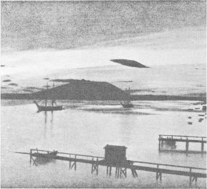

"Ship Was Sunk By Meteor / Ball Of Fire From The Heavens Struck A Vessel Becalmed In Pacific. Annihilating It", Post de Washington, 5 mai 1907, p. 1.
A Clarke's Beach (Newfoundland?), observation d'un train fantôme "A Phantom Train", Daily News de St. John's (Newfoundland), 3 avril 1907.
[Croquis d'une] photographie de l'observation en Norvège. Probablement un nuage, comme on en remarque
d'autres semblables en arrière-plan La Domenica del Corriere, 20 mars 1967

À Burlington (Vermont), une terrible explosion est entendue à travers la ville alors
que ce qui semble être une boule de lumière est vue tomber soit du ciel soit d'un énorme objet en forme de
torpille. La "boule de lumière" explose en frappant le sol avec une détonation entendue à des miles à la ronde.
L'évêque John S. Michaud en donnant ses impressions de l'étrange événement dit : Je me tenais engagé en
conversation avec l'ancien gouverneur Woodbury et A. A. Buell, lorsque, sans le moindre avertissement, nous
fûmes effrayés par ce qui sembla être une terrible explosion, à l'évidence très près de nous. En regardant vers
l'est le long de la rue de la Faculté j'observais un crops en forme de torpille, stationnaire dans les airs, à
environ 50 pieds au-dessus du sommet des bâtiments. Il semblait faire 6 pieds de long, la coque ou la couverture
ayant une apparence sombre, avec ici et là des langues de feu émanant de points à la surface qui avait
l'apparence de cuivre dépoli rougi par la chaleur. Bien que stationnaire lorsque je le vis pour la
1ère fois, cet objet commença rapidement à se déplacer pour finalement descendre vers le sud. Alors
qu'il se déplaçait la couverture sembla se rompre en plusieurs endroits et à travers ces ruptures émanaient
intensément des flammes rouges William H. Alexander. "A possible case of ball lightning", Monthly Weather Review, 35 (July 1907): 310-11 < Fort, C. H.: The Book of the Damned, chap. 25, 1919 < UFO Roundup 4-36 < UFO Roundup 5-28"Mystery of the 'Red Rains' in Japan", The Fresno Bee de Fresno (Californie), 11 octobre 1925, qui mentionne à tort la date du 27 juin .
Dans le lac Walker, Nevada, USA , observation d'un grand
serpent "Great Serpent Seen In Walker Lake", San Francisco Call, 12 juillet 1907.
(1909 ?) A Drøbak, Norvège, photographie d'un
phénomène opaque stationnaire au-dessus d'un navire (ci-contre) QUFO, v 1/n 13Winkler:
Catalog of UFO-like data before 1947 - Part I., 1984, 35.
Automne
A Crowley, Liousiane, plusieurs personnes voient
un vaisseau aérien portant un habitacle "Airship Sailed Over Crowley", Daily News de Galveston (Texas), 11 octobre 1907, p. 6.
A Rutland (Vermont), des habitants voient une
lumière rougeâtre de grande puissance passer au-dessus de la ville Article du Herald-Recorder de Potsdam (New York), 15 novembre 1907.
le matin A Brownsville, Texas, observation d'une sorte de "parachute" voguant dans les airs
"Local Items", Daily Herald de Brownsville (Texas), 20 novembre 1907, p. 3.
après-midi Au-dessus de la direction de Matamoros, on remarque une sorte de "ballon" semblable à celui observé le 20 à
Brownsville (Texas) voguer vers les Etats-Unis au nord-est "Mysterious Air Craft Seen Again", Daily Herald de Brownsville (Texas), 2 décembre 1907, p. 1.
À Tviberg (Norvège), Theodor Tviberg et 2 de ses amis voient un objet rond brillant
arriver du nord-est en direction du sud-est. La vitesse est plus élevée que n'importe quel appareil de 1980. Le
ciel est clair avec quelques nuages à 200 m. La Lune est à quelques ° au-dessus des montagnes à l'Est. L'objet
passe entre la Lune et les montagnes UFO, 1/1983, 38 < Ole Jonny Brænne: "Pre-1947 UFO-type Incidents in Norway", UFO Norway.
tard dans la nuit À Jamaica, Long
Island, on observe un ballon énorme au-dessus de la ville, portant une lanterne allumée, suspendue
depuis une corde pendant à 20 pieds sous le panier"See A Strange Balloon", Sentinel de Fort Wayne (Indiana), 17 décembre 1907.
Dans le détroit de Malacca, M. S. C. Patterson, du vapeur Delta, observe pendant 30 mn des rayons
lumineux qui semblent pivoter sur un centre, comme les rayons d'une roue : ils semblaient mesurer 300 m de long.
Puis, on remarqua, dans le sud de la mer de Chine, une rotation d'éclairs : On eût dit une roue horizontale,
tournant rapidement au-dessus de l'eau et produisant sur l'équipage un profond sentiment de malaise.